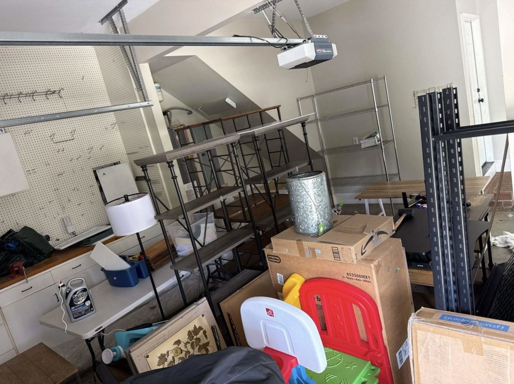

¿Cuánto cuesta limpiar un garaje en Charlotte?
Depende del espacio que ocupa la carga, no del tiempo que tarda. Un garaje de un carro lleno suele costar $395, y uno de dos carros lleno de $475 a $560. Un trabajo más pequeño, como despejar una sola pared o un garaje de un carro medio lleno, queda entre $235 y $315. Un solo artículo cuesta $95.
Ese precio por un solo artículo es para una sola cosa que una persona puede cargar, a nivel del suelo, y que cabe tal como está. El garaje es donde más se pone a prueba esa definición, así que vale la pena decirlo claro: una caminadora, un congelador horizontal o un sillón seccional grande son artículos de dos personas a +$40, y una podadora de montar, una caja fuerte, un jacuzzi, una mesa de billar de pizarra o el desmontaje de una caseta o juego infantil se cotizan aparte en lugar de meterse en el precio de un solo artículo.
El precio no cambia una vez cotizado. No hay mínimo por hora ni mínimo de fin de semana en una limpieza, porque es trabajo de precio fijo. El sábado cuesta lo mismo que un martes. El domingo suma 15 por ciento. El servicio el mismo día o de emergencia suma $40, y se dice antes de agendar, no aparece de sorpresa en la factura.
- Un solo artículo: $95 — una sola cosa que carga una persona, a nivel del suelo, cabe tal como está
- Una carga de pickup: $150 — unas cuantas cosas, o vaciar una repisa
- Un cuarto pequeño: $235 — un garaje chico de un carro, o despejar una pared
- Un cuarto grande: $315 — un garaje de un carro con repisas y equipo de jardín
- Un garaje de un carro: $395 — un garaje típico de un carro lleno
- Un garaje de dos carros, parcial: $475 — un garaje de dos carros con un carro todavía estacionado
- Un garaje de dos carros lleno: $560 — del piso al techo en los dos lados
- Un tráiler lleno hasta arriba: $700 — un garaje más una caseta, o un garaje como parte de vaciar toda la casa
¿Cómo calculo el tamaño de la limpieza de mi garaje?
Casi todos calculan de menos un garaje. La razón es que el garaje guarda hacia arriba: repisas en las paredes, racks en el techo, vigas y cajas apiladas, y el ojo ve el piso en lugar del volumen. Una carga de pickup es la unidad para comparar, y ese nivel cuesta $150. La mayoría de los garajes tienen de cuatro a seis veces eso cuando todo baja de las repisas y del techo.
El truco confiable es imaginar el garaje vaciado en cargas de pickup. Un garaje de un carro con repisas de un lado y un banco de trabajo suele ser cuatro cargas, que queda en el nivel de garaje de un carro, $395. Un garaje de dos carros con las dos paredes llenas y un rack en el techo son de seis a ocho cargas, o sea de $475 a $560. Si el estimado queda entre dos niveles, se cotiza el más bajo, y solo sube si la carga de verdad pasa la línea con todos ahí presentes.
Los trabajos chicos de garaje tampoco necesitan toda la lista. Despejar una pared, una lista corta de cosas o un garaje de un carro que nunca se llenó del todo suele quedar en el nivel de cuarto pequeño o grande, de $235 a $315. Lo que llega a hacer el trabajo depende de lo que se describió y de qué tan angosta es la entrada, y de todos modos no cambia el mínimo de $95 por un solo artículo.
¿Tengo que ordenar el garaje antes de que lleguen?
No. Ordenar es lo que la gente deja para después durante años, y no es requisito. Señala lo que se queda y lo que se va, y nosotros nos encargamos del resto. Lo más común es un garaje donde una repisa y la caja de herramientas se quedan y todo lo demás se va, y esa instrucción funciona perfecto.
Hay dos cosas que vale la pena hacer antes de que entre el tráiler, y toman unos diez minutos. Revisa los cajones y la parte de arriba de los gabinetes, porque una vez que la carga sale de la propiedad no se puede recuperar nada. Y saca primero de la pila cualquier cosa sentimental: la caja de fotos que terminó en el garaje durante una mudanza es lo que más se lamenta en una limpieza, y por fuera nunca parece nada especial.
Si el garaje se despeja para vender, para entregar una renta o por una herencia, lo útil es mandar fotos desde la puerta en vez de describirlo. Te regresamos un número fijo el mismo día, confirmado en persona antes de cargar nada, y eso importa cuando quien decide no es quien está parado en el garaje.
¿Ese precio es por carga o por todo el trabajo?
Cada precio de la lista es una carga del tráiler, un viaje. Los niveles describen qué tan lleno queda el tráiler, y los nombres son para imaginarlo fácil: un trabajo que llena el tráiler dos veces son dos cargas, y se cotiza así antes de levantar nada, nunca como sorpresa después.
Eso importa más en los trabajos grandes. El tráiler lleno hasta arriba cuesta $700 por ese viaje, no es un precio fijo por vaciar una casa entera, porque vaciar una casa de tres recámaras muchas veces no cabe en un solo tráiler. Manda fotos y el número de viajes viene incluido en la cotización.
El mínimo de $95 aplica a cada viaje, incluso a un segundo viaje. Si una remodelación va a dejar otra pila la próxima semana, avísanos: volver en un segundo viaje programado es normal, y sale más barato planearlo que agregarlo.
¿Qué entra en la lista y qué se cotiza aparte?
Los precios de arriba cubren artículos de casa y oficina: muebles, cajas y bolsas, electrodomésticos, colchones, aparatos electrónicos, cosas del garaje y del patio, y el contenido de bodegas y herencias. Eso es la gran mayoría de lo que sale de una casa, y para ese trabajo el espacio que ocupa es una forma justa de cobrar.
El material pesado se cotiza aparte, y vale la pena explicar por qué en vez de solo decir que no. Un tráiler tiene un límite de peso por eje, y el material pesado llega a ese límite mucho antes de llenar el espacio. El concreto y el ladrillo rotos pesan más de una tonelada por yarda cúbica, así que una pila de mampostería que parece un cuarto de carga ya es un viaje completo: el tráiler está legalmente lleno a la altura del tobillo. Cobrar eso con la lista por volumen estaría mal en los dos sentidos: cobraría de más una carga pequeña y limpia y muy de menos una pesada. Por eso lleva su propio número, y llevamos el tráiler correcto.
Se cotiza en lugar de cobrarse con la lista: concreto, ladrillo, block y adoquines · tierra, pasto en rollo y grava · techo arrancado · drywall y escombro de demolición · desechos de construcción y de obra · azulejo y yeso arrancados. Sí hacemos este trabajo: la demolición y el acarreo para contratistas son parte real de lo que hacemos, no una excepción que tratemos de evitar. Solo que primero te damos un número real.
Otras dos cosas se cotizan en lugar de ir en la lista. Artículos individuales extra grandes o difíciles: lo que está fuera de los muebles normales de una casa, desde un piano o una caja fuerte hasta un jacuzzi, una mesa de billar o una podadora de montar. Y los desmontajes: casetas, juegos infantiles, decks, jacuzzis y piscinas sobre el suelo se cotizan a precio fijo por el trabajo, nunca por hora.
El asbesto es lo único que no aceptamos a ningún precio. Necesita un contratista certificado en remoción y un permiso del estado, y ningún precio lo convierte en nuestro trabajo. Tampoco aceptamos químicos peligrosos, combustible, solventes, pesticidas, tanques de propano o a presión, municiones ni desechos médicos o biológicos. Las casas con acumulación, desechos de animales y limpieza biológica se cotizan aparte en vez de rechazarse: dinos qué es y te damos un número.
- En la lista: artículos de casa y oficina — muebles, cajas, bolsas, electrodomésticos, cosas del garaje y del patio
- Se cotiza: concreto, ladrillo, tierra, techos, drywall, escombro de demolición y de construcción
- Se cotiza: artículos individuales extra grandes y cualquier cosa fuera de lo normal en una casa
- Precio fijo cotizado: desmontaje de casetas, juegos infantiles, decks, jacuzzis y piscinas sobre el suelo
- Se cotiza: acumulación, desechos de animales y riesgos biológicos
- Nunca, a ningún precio: asbesto, químicos peligrosos, combustible, tanques de propano y a presión, municiones, desechos médicos
¿Qué sale de un garaje que cuesta extra?
Cuatro cosas llevan cargo extra, y las cuatro viven en los garajes. Los electrodomésticos con refrigerante son +$40 c/u: el segundo refrigerador o el congelador de la esquina es el extra más común en una limpieza. Las llantas son +$8 c/u, los colchones y box springs +$25 c/u, y la pintura, los electrónicos y otros artículos regulados se cobran a lo que cobre el centro de desecho, sin ganancia encima.
El cargo por refrigerante no es inventado. Según las reglas de la Sección 608 de la EPA, un técnico certificado tiene que recuperar el refrigerante antes de desechar un refrigerador, congelador, aire de ventana o deshumidificador, y el último en la cadena tiene que demostrar que se hizo. El cargo por llantas existe porque Carolina del Norte prohíbe las llantas de desecho en los rellenos sanitarios, así que van a un procesador que cobra por pieza. Los electrónicos tienen una regla parecida: NC prohíbe en todo el estado tirar televisores, computadoras, monitores, impresoras y la mayoría de los accesorios en los rellenos, así que un garaje lleno de computadoras viejas va a un reciclador registrado.
Hay una más que conviene saber con tiempo, porque es nueva y vive justo en este cuarto. Carolina del Norte prohíbe las baterías de litio en los rellenos sanitarios a partir del 1 de diciembre de 2026. Las baterías de herramientas inalámbricas, de bicicletas y scooters eléctricos y los cargadores viejos entran en esta regla, y casi siempre están en el garaje y no en otra parte de la casa. Sepáralas y las mandamos al lugar correcto en vez de que se vuelvan un problema en la estación de transferencia.
Los cargos por acceso son aparte de los cargos por material. Las escaleras son +$25 por piso arriba del primero, algo que pasa en garajes de sótano y en townhomes donde el garaje está un nivel abajo de la calle.
- Electrodoméstico con refrigerante (refrigerador, congelador, aire de ventana, deshumidificador): +$40 c/u
- Colchón o box spring: +$25 c/u
- Llanta: +$8 c/u
- Pintura, electrónicos y artículos regulados: al costo de desecho, sin ganancia
- Escaleras arriba del primer piso: +$25 por piso
- Artículo pesado o difícil de dos personas (caminadora, electrodoméstico grande, sillón seccional grande): +$40
¿Qué no se llevan de un garaje?
Los desechos peligrosos y regulados son un no rotundo, sin cargo extra que lo haga un sí. En un garaje eso quiere decir aceite de motor, combustible y bidones de gasolina, solventes, pesticidas y químicos de jardín, tanques de propano y otros tanques a presión, municiones, y asbesto o desechos de pintura con plomo. Son justo las cosas que más suelen estar en una repisa del garaje, así que es mejor saberlo antes de que llegue el tráiler que después.
Hay un lugar sencillo para ellos. El condado de Mecklenburg tiene cuatro centros de reciclaje que reciben desechos peligrosos del hogar de los residentes del condado, abiertos de lunes a sábado de 7 a.m. a 4 p.m.: Compost Central en 140 Valleydale Road, Foxhole en 17131 Lancaster Highway, Hickory Grove en 8007 Pence Road y North Mecklenburg en 12300 N. Statesville Road en Huntersville. La pintura, el aceite y los químicos van ahí. Los residentes del condado de York en Fort Mill, Tega Cay, Lake Wylie y Rock Hill tienen una recolección de materiales peligrosos del hogar el primer sábado de marzo y de octubre.
El concreto, el ladrillo, la tierra y las losas viejas de patio se pueden acarrear, pero se cobran por peso y no por espacio, porque un poco de mampostería puede pesar más que una carga completa de muebles. Menciónalo al agendar y no el mismo día, para tener listos el equipo y el lugar de desecho correctos.
- No nos llevamos: aceite de motor, combustible y bidones de gasolina, solventes, pesticidas, químicos de jardín
- No nos llevamos: tanques de propano y a presión, municiones, explosivos
- No nos llevamos: asbesto, desechos de pintura con plomo, desechos médicos o biológicos
- Se cobra por peso, pregunta al agendar: concreto, ladrillo, tierra, losas de patio
- Sí se puede incluir, con cargo extra: pintura, electrónicos, llantas, electrodomésticos con refrigerante
¿Pueden vaciar el garaje si yo no estoy?
Sí, y es una forma común de hacer una limpieza para entregar una renta, por una herencia o para un dueño que vive en otro estado. El precio se confirma por escrito antes de que salgamos, con base en fotos, así que nunca cambia un número sin que haya alguien ahí para escucharlo.
Lo que se necesita es acceso y una instrucción clara. Un código del garaje o una caja con llave cubre el acceso. La instrucción clara es un texto que diga qué se queda, y si la respuesta es que nada se queda, es el trabajo más sencillo de la lista. Mandamos fotos cuando el tráiler está cargado para que quien no está ahí pueda ver el cuarto.
El pago se hace cuando la carga está en el tráiler. Efectivo, cheque y Zelle no tienen cargo; con tarjeta se suma 3.5 por ciento. Para un trabajo a distancia eso casi siempre es Zelle, que se acredita la misma tarde y no cuesta nada.
¿Qué tan rápido pueden venir y cuánto cuesta el viaje?
Las limpiezas de garaje muchas veces están disponibles el mismo día, y el servicio el mismo día o de emergencia suma $40. Mount N Muscle es atendido por su dueño desde Steele Creek y tiene 5.0 estrellas con más de 100 reseñas en Google. La forma más rápida de tener un número real es mandar dos o tres fotos desde la puerta por texto al 704-237-0164.
El viaje ya está incluido en el número que cotizamos: un solo precio por el trabajo, no un precio más un cargo por el viaje. El precio se confirma antes de empezar. Mount N Muscle atiende las 16 ciudades del área de Charlotte desde su base en Steele Creek, y un garaje del otro lado del área recibe el mismo precio fijo que uno a la vuelta: la cotización cubre todo el trabajo, de la puerta al lugar de desecho, sin una línea aparte de millas en la factura.
Hay un programa de referidos que vale la pena conocer si un vecino está por hacer el mismo trabajo, algo que en una calle de casas parecidas pasa seguido. Recomienda a alguien y recibes $25 de crédito mientras esa persona recibe $25 de descuento en su primer servicio, y tres referidos que contraten te dan $100 de crédito o una hora gratis de mano de obra de una persona. Es solo por trabajos contratados; nunca damos nada a cambio de una reseña.